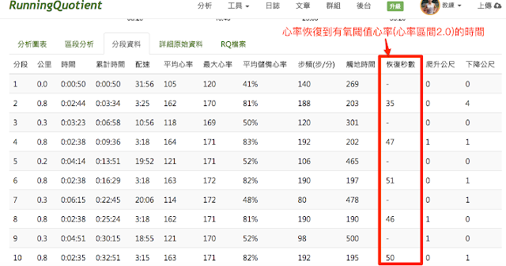

RQ 新功能：間歇恢復秒數

這段時間協助羅曼諾夫博士在上海執行全馬訓練營，忙於博士和學員之間的溝通，加上自己也跟著課表訓練，變得有點太過充實……！現在，每天都要把自己的數據回報給博士。其中有一項數據是每趟間歇跑完後，心率恢復到儲備心率區間 1.7 所需的時間，在過去三個星期中，每次訓練完都要在 Garmin Connect 的網頁上對著電腦拉動心率圖表計算秒數。
羅曼諾夫博士研究所定義的有氧閾值（Aerobic Threshold）是現在 RQ 定義心率區間的 1.7，也就是 70%的儲備心率，落在丹尼爾斯博士定義的 E 強度區間。在這段期間我發現羅曼諾夫博士非常重視「有氧閾值」(AT)，他說這是一個人運用氧氣最有效率的強度。
這個論點跟《丹尼爾斯博士跑步方程式》中第四章對 E 強度訓練效用的說明很接近，在書中第 55 頁提到：「E 課表的強度能有效強化心臟的肌肉，因為當心跳率在最大心率的 60%時，心臟跳動一次的力道最大。當你跑得比 E 配速更快時，雖然心跳變快、心輸出量也變大，但心臟每跳一次送出的血流量(心搏血量，stroke volume)卻只增加一點點。所以最能有效強化心臟肌肉的強度，就是輕鬆跑的 E 配速，雖然你感覺起來不辛苦，但在這種強度下你的心臟可是跳得最用力的時候。」
博士說如果間歇跑完後心率恢復到 AT 的時間超過 90 秒，就代表間歇的速度已超過目前能負荷的極限，要立刻調降配速。此外，也可以做週間的比較，比如說第二週跑 800 公尺間歇時，每趟的心率大約都花 35 秒回到 1.7，但第三週最多花了 50 秒。簡單來說，同樣課表的恢復時間變長，代表身體狀況相對變差。如果恢復時間拉長太多就是一種警示，需要多休息，或是降低配速。反之，如果恢復時間變短了，代表身體狀況更佳，或是該配速變得更輕鬆。
這個數據很有趣。簡單來說就是心率下降的速度，而且自己 400 公尺和 800 公尺間歇時的心率下降速度竟然差不多，這是過去不知道的事。
原本要花時間在計算這個數據，但現在 RunningQuotient 已經可以自動把每一個分段的數據計算出來。計算時間的起點是每一個分段的結束。比如說剛跑完一趟 800 公尺，心率 170，這段總共休息了三分鐘，但下降到(區間 2.0)M 心率下限 153，花了 42 秒，在「恢復秒數」的欄位就會顯示 42 秒。但如果這位跑者只休 35 秒，這一格就會自動填上「--」，代表沒有數據。
謝謝 RQ 團隊的努力，更新速度超快，讓大家能開始學習認識與使用這個數據。